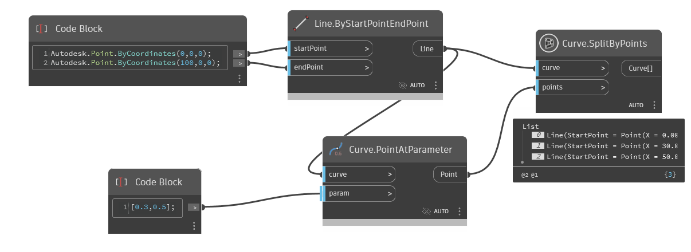
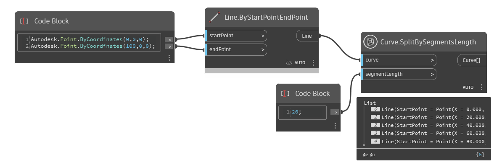
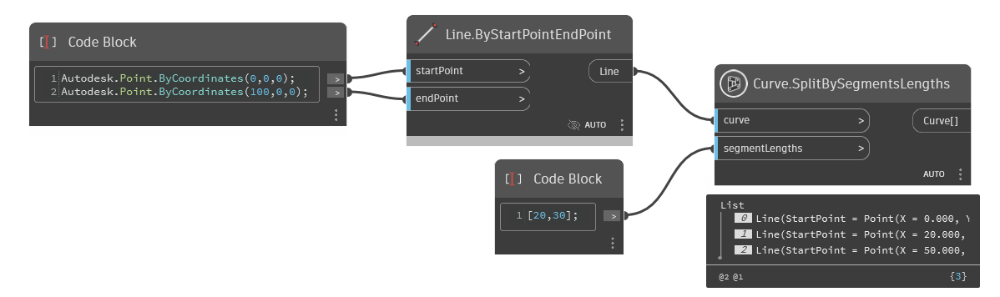

Class Curve
- Namespace
- OpenMEPSandbox.Geometry
- Assembly
- OpenMEPSandbox.dll
public class Curve- Inheritance
-
Curve
- Inherited Members
Methods
AsLine(Curve)
Convert a curve simple to line
public static Line AsLine(Curve curve)Parameters
curveCurvecurve need to convert
Returns
- Line
Line
SplitByPoints(Curve, List<Point>)
splits the curve at each point in the input list, creating a new curve between each adjacent pair of points
public static List<Curve> SplitByPoints(Curve curve, List<Point> points)Parameters
curveCurveThe input curve to be split.
pointsList<Point>A list of points that represent the locations at which to split the curve.
Returns
- List<Curve>
A list of curves that result from splitting the input curve at the specified points
Examples

SplitBySegmentsLength(Curve, double)
splits a curve into segments of a specified length
public static List<Curve> SplitBySegmentsLength(Curve curve, double segmentLength)Parameters
curveCurveThe input curve to be split.
segmentLengthdoubleA number that represents the length of each segment to split the curve into, or a list of numbers that represent the lengths of the segments to split the curve into.
Returns
- List<Curve>
A list of curves that result from splitting the input curve at the specified segment lengths.
Examples

SplitBySegmentsLengths(Curve, List<double>)
splits a curve into segments of varying lengths specified by a list of segment lengths
public static List<Curve> SplitBySegmentsLengths(Curve curve, List<double> segmentLengths)Parameters
curveCurveThe input curve to be split.
segmentLengthsList<double>A list of numbers that represent the lengths of the segments to split the curve into.
Returns
- List<Curve>
A list of curves that result from splitting the input curve at the specified segment lengths.
Examples
